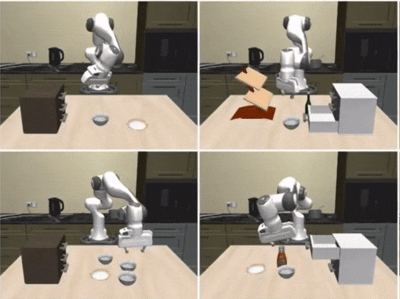
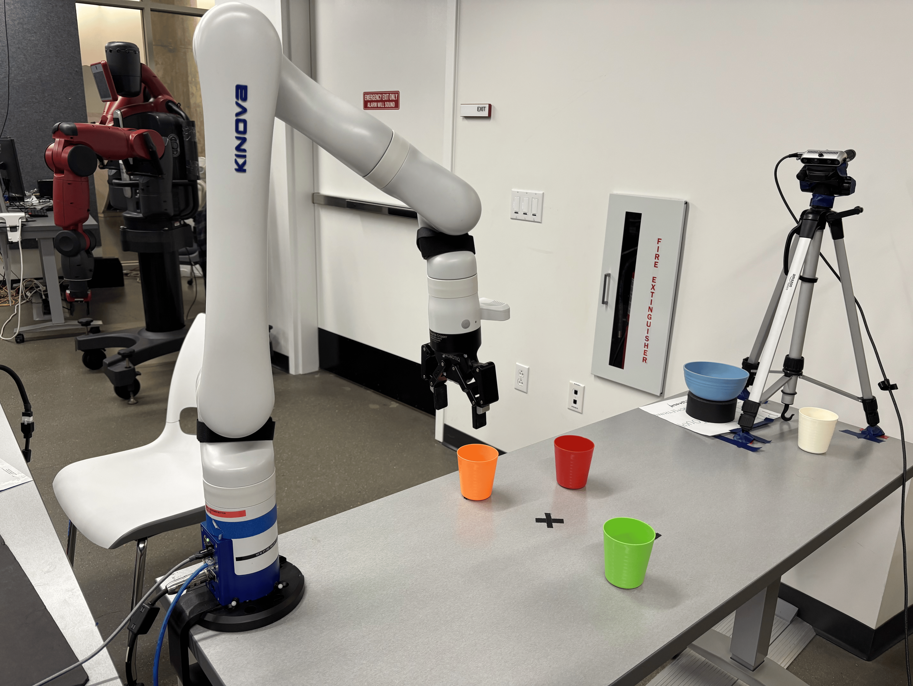
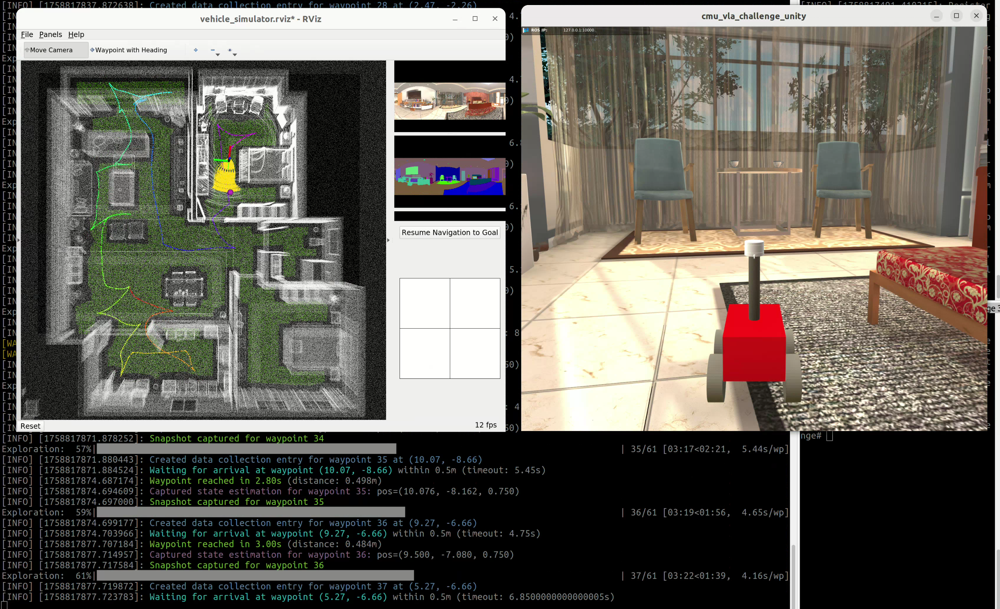

Ishita Gupta
I'm a second-year Master's student in Robotic Systems Development (MRSD) at Carnegie Mellon University, where I specialize in robotics, deep learning, and the systems engineering required to bring complex robotic projects from concept to reality.
Previously, I was at Addverb for 2.5 years, where I engineered autonomous navigation systems, physics-based simulators, and multi-robot applications. I also interned at Google on the Nest Devices team, automating cloud infrastructure pipelines.
I'm passionate about building systems that perceive, reason, and act in complex environments. My current work explores 3D Vision and the application of Reinforcement Learning in Vision Language Action Models (VLAs). I am currently a Graduate Research Assistant at CMU's Robotics Institute, working with Prof. Katerina Fragkiadaki on online RL methods for 3D VLAs. I am especially interested in using these techniques to solve complex, long-horizon planning problems for robotics and broader AI.
Email / LinkedIn / Google Scholar / Github / Resume

News |
Publications |

|
FALCON: Learning Force-Adaptive Humanoid Loco-Manipulation
Y. Zhang, Y. Yuan, P. Gurunath, Ishita Gupta, Tairan He, et al., Guanya Shi Learning for Dynamics & Control (L4DC) 2026, Oral Presentation project page / paper / code TL;DR: FALCON enables various heavy-duty humanoid loco-manipulation tasks via a new dual-agent force-adaptive RL framework. |
Industry Experience |
|
|
Nissan Advanced Technology Center - Silicon Valley
May 2025 - Aug 2025 Robotics Research Intern · Humanoid Robotics Team Built Apple Vision Pro teleoperation system and curated 800+ bimanual demonstrations for the Unitree humanoid (28 DoF). Implemented 2D RGB and 3D point-cloud diffusion policies, and fine-tuned NVIDIA GR00T N1.5 with LoRA, improving robustness by 3.3x. Developed RL-based whole-body control for humanoid autonomy (L4DC '26 Oral). |
|
|
Addverb Technologies
Jan 2022 - Jul 2024 Robotics Software Engineer Implemented the backend of an ORB-SLAM system for a quadruped robot, focusing on pose-graph optimization, local bundle adjustment, and keyframe management in GPS-denied environments. Engineered a real-time, thread-safe physics simulator in modern C++ using OpenGL and NVIDIA PhysX, supporting deterministic 100Hz control loops and haptic hardware integration. |
|
|
Google
May 2021 - Aug 2021 Software Engineering Intern · Nest Devices Automated the backend cloud pipeline for camera onboarding, reducing a 4-month workflow to a single execution. Built a tool that generated 1,000+ LOC across multiple languages and automated change-list publishing. |
Projects & Research |

|
Humanoid Manipulation with Visual-Language-Action Model
CMU MRSD Capstone Project (Fall 2025) Sponsored by Nissan and Field AI Advised by Prof. Guanya Shi project website Fine-tuned and improved NVIDIA GR00T N1.5 VLA model with asynchronous inference architecture and real-time teleoperation/data infrastructure for reliable deployment and scalable training. |
|
Autonomous Humanoid Loco-Manipulation for Tote Logistics
CMU MRSD Capstone Project (Spring 2025) Sponsored by Nissan and Field AI Advised by Prof. Guanya Shi project website Built an autonomy system that fuses 6D pose estimation (NVIDIA FoundationPose) with motion-capture localization for precise perception and navigation. Enabled the Unitree G1 to autonomously manipulate totes and operate effectively in real-world factory workflows. |
|
|
 |
Online Reinforcement Learning for Robotic Foundation Models
CMU, Fall 2025 project report Fine-tuned OpenVLA-OFT with GRPO & LoRA, enabling task adaptation beyond SFT on the sparse-reward LIBERO benchmark. Boosted task success from 80% to 98%, preserving a 100Hz control frequency by training a decoupled stochastic policy head. |
|
 |
Semantically Embedded 3D Gaussian Splatting VLAs
CMU, Fall 2025 Advised by Prof. Shubham Tulsiani poster Developed a 3D Gaussian Splatting perception module fused with NVIDIA GR00T to improve grasp reliability and pick-and-place on a Kinova Gen3 arm showing 44% improvement over vanilla GR00T. |

|
Training Language Models to Self-Correct via Reinforcement Learning
CMU, Fall 2024 project report Trained LLaMA for autonomous self-correction via a two-stage policy gradient framework with KL-constrained initialization and shaped rewards, achieving a 57% reduction in answer instability on MATH500 by mitigating behavior collapse and distribution shift in multi-turn RL. |
|
 |
Vision-Language-Navigation: Embodied Reasoning System
IROS '25 Workshop: Vision-Language-Autonomy Challenge (3rd Place) problem Built an indoor VLN system that answers natural language queries by combining Gemini 2.5 Pro embodied reasoning with a custom ROS 2 state machine. The system produced numerical answers, object references, or waypoint plans under a strict 10-minute limit. |
|
Project Yoriichi: Real-Time Motion Tracking and Imitation Learning for Robotic Fencing
CMU Robot Autonomy Course Project, Spring 2025 video demo Developed a full-stack motion tracking and imitation learning system enabling a Franka Emika Panda robot to dynamically track and mimic human sword motion. Integrated YOLOv8 for real-time object segmentation with HSV thresholding for pose detection, transforming sword trajectories into the world frame to continuously update the robot's pose for motion imitation. |
|
|
Spatio-Temporal Transformer for Video Anomaly Detection
CMU , Spring 2024 project report Re-implemented the LIPINC-V2 Vision Temporal Transformer for deepfake detection, reproducing the published 0.98 AP on the LipSyncTIMIT benchmark. Engineered a custom 2,300-sample video dataset and established a CNN-LSTM baseline (94.9% accuracy), analyzing dataset bias and temporal model generalization. |
Education |
|
|
Carnegie Mellon University Master of Science in Robotic Systems Development (MRSD) CGPA: 3.83 | August 2024 - May 2026 Coursework: Diffusion & Flow Matching, Deep Reinforcement Learning (10-703), Generative AI (10-623) Show more |
|
|
The LNM Institute of Information Technology (LNMIIT) Bachelor of Technology (B.Tech) in Computer Science and Engineering August 2018 - July 2022 Coursework: Artificial Intelligence, NLP, Advanced Algorithms Show more |
Teaching Experience |
|
|
Carnegie Mellon University Teaching Assistant - Introduction to Deep Learning (11-785) Spring 2025, Fall 2025 Course Website / YouTube Channel Responsibilities: • Lead recitation sections and office hours for 400+ students • Mentor teams on Deep Learning projects • Assist in course development and curriculum refinement • Create educational content and recorded lectures for online learning |
|
© 2025 Ishita Gupta · Template from Jon Barron |